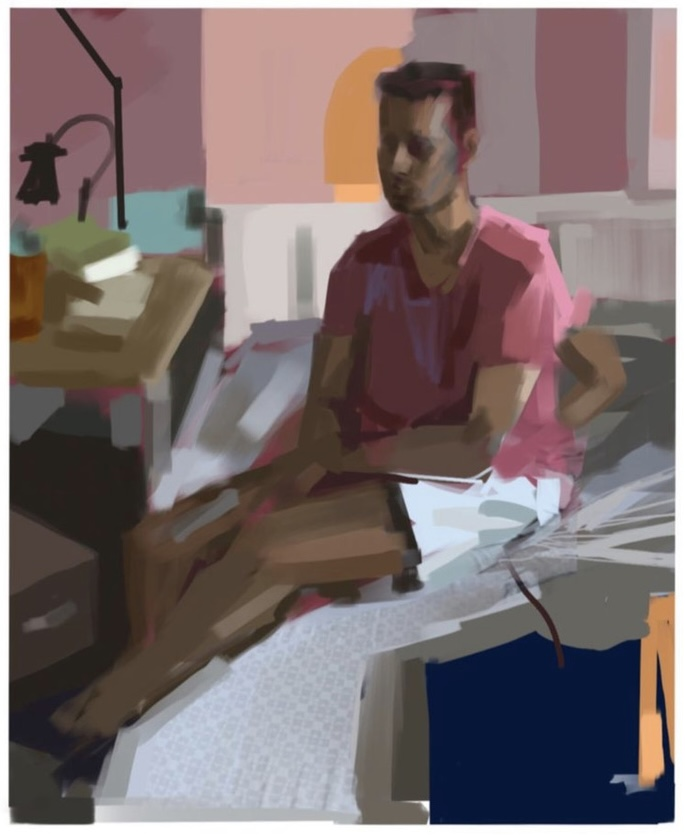

Kushagra "Kush" Tiwary
ktiwary [at] mit [dot] edu | LinkedIn | X | Google Scholar
| CV
Office: E14-374H, 75 Amherst St, Cambridge, MA 02139 | Download Image
I am a 2nd year PhD student in the Camera Culture group at the MIT Media Lab, advised by Ramesh Raskar. I also work with Brian Cheung and Tomaso Poggio's group. I recieved my S.M'23 from MIT and BS'19 ECE from Univeristy of Illinois at Urbana-Champaign. Prior to MIT, I built the Software 2.0 stack at Optimus Ride.
My research focuses on building AI systems that can invent and discover new things through interactions in environments. Specifically, this includes:
- Using reinforcement learning and evolutionary algorithms alongside Large Language Models to invent and discover new things.
- Building scientific environments where artificial agents can help us answer the why questions in vision.
- Generating new types of vision for embodied agents interacting in the real world.
This approach converts the traditional scientific discovery loop into a generation-verification loop using AI and simulation. I am an interdisciplinary person by nature, and so is my work: I'm broadly interested in Computer Vision, Reinforcement Learning, Artificial Life, and Vision Science. Reach out to chat or collaborate (Bell Labs model of open doors).
I am grateful to be the first in my extended family to be in a PhD program. To learn more about how to apply to PhD programs, I also volunteer for the Media Lab’s SOS Program and the EECS Graduate Application Assistance Program (GAAP).